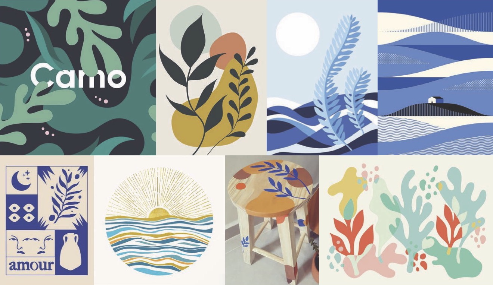
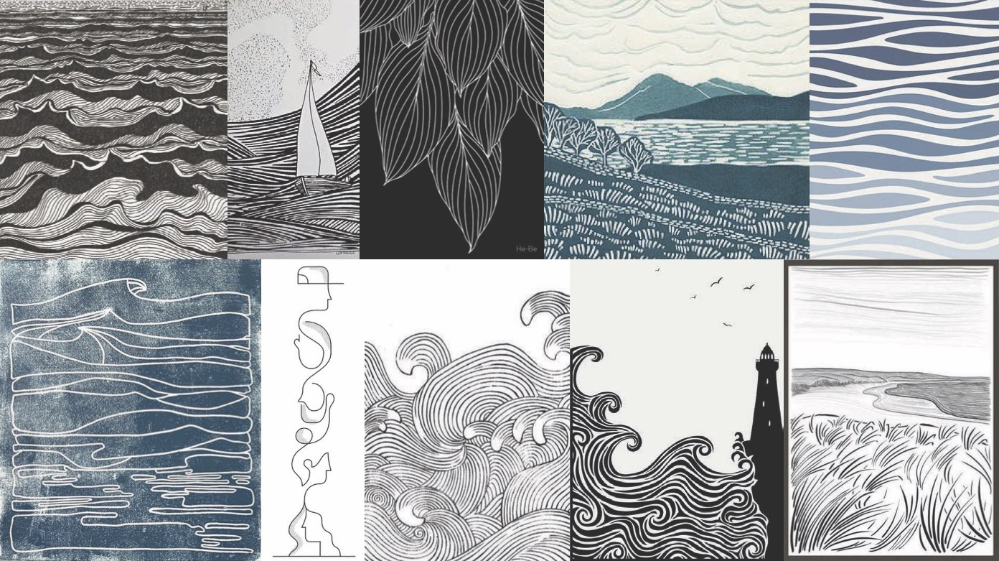

Town of Webster, NY Website Redesign
UI • UX • User Journey • Visual Design
Breathing new life into an overused format.
Overview
Once you've seen one city's website, you've seen them all.
Finding common shortfalls in this type of website and implementing solutions.
Timeline - 10 weeks
Tools - Figma, Illustrator
Problems with the Current Design
Home page did not include much relevant content or give an idea of the town's character
Overwhelming sea of items in the navigation dropdowns
Unclear hierarchy in both navigation and content pages


Goals
1. Create a better hierarchy to increase readability and skimmability.
2. Give information more intentional organization.
3. Establish a pleasing and cohesive style and color palette.
Visual Directions
Ideas for two different styles. The first is colorful, bubbly, confident, and bright, while the second is monochromatic and a bit more gentle.


Wireframe Iterations
These iterations explore ways that links could be easily accessed on the home page. In some, more service quicklinks could appear on hover.


Final Designs
These are the ways I addressed my goals for this solution:
-
Hierarchy: Section titles are larger and colored to stand out from subcontent.
-
Organization: Home page content is relevant and informative. Garbage & Recycling page disposal providers are listed in individual sections and include provider-specific details.
-
Style: More lively color palette. Leaf graphic motif used throughout site for style and continuity.


Prototype
Follows the path of a user looking for details about getting trash pickup services at their home.
With More Time...
I would bring more life into the navigation bar and the area above the fold on the home page using more visual elements and reworked colors.